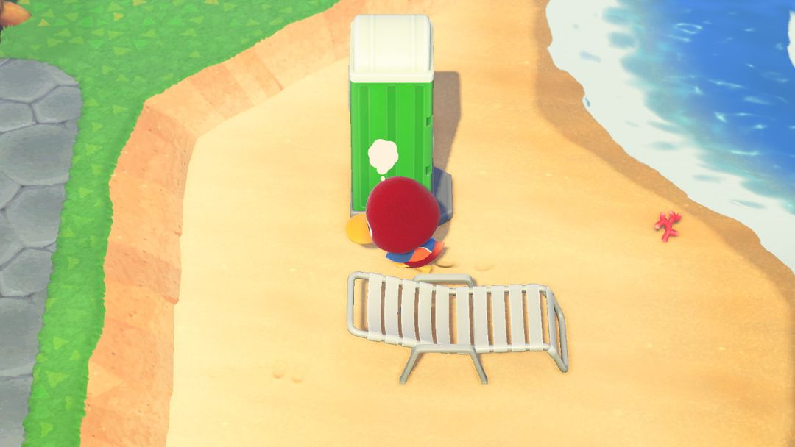
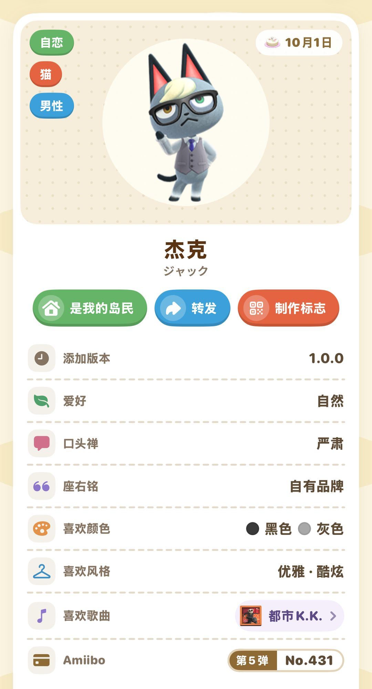
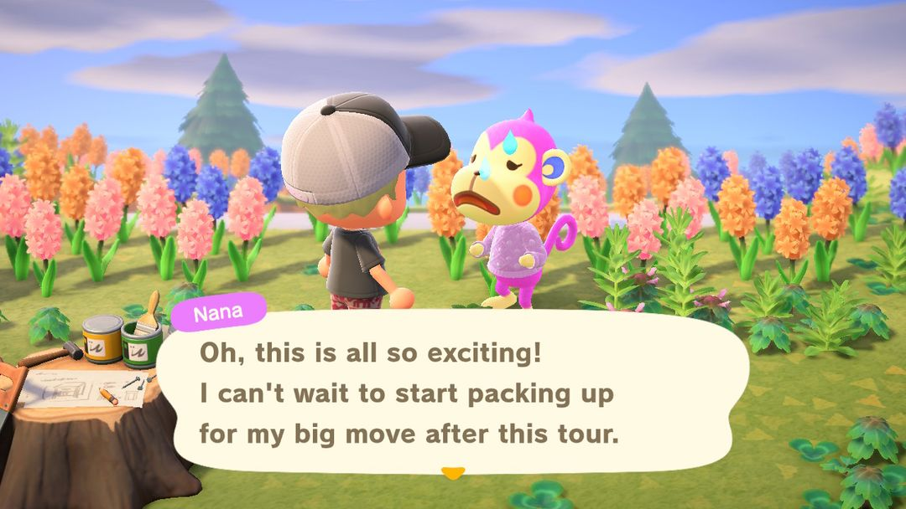
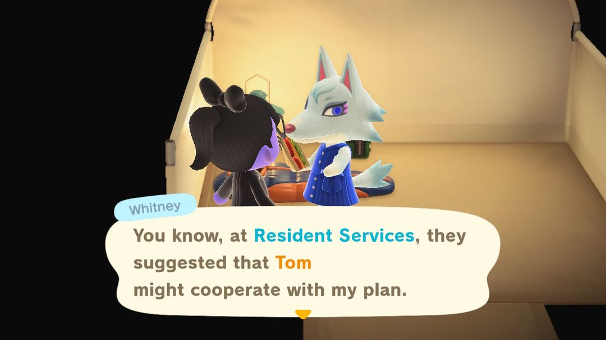

住民の引っ越し（入居と退去）
好きな住民は引きとめて、そうでない住民は送り出し、来てほしい住民を呼ぶ
島に誰が住むかは、ほとんどあなたしだいです。住民が出ていくルートは2つだけ。1つは本人が相談しに来て、あなたがOKしたとき。もう1つは、新しい住民を招くときにあなたが場所を空けたとき。あなたがうなずかない限り、誰かがこっそり荷物をまとめて出ていくことはありません。
つまり、やることは3つだけ。好きな住民が引っ越しを考え始めたら引きとめる、出ていってほしい住民が相談に来たらすんなりOKする、空いた土地にはすぐ来てほしい住民を呼ぶ。以下この順番で説明して、最後にamiiboカードで住民を指名して入れ替える方法を紹介します。
01引っ越しを考える住民が出るタイミング
島に住める住民は最大10人。6人以上になってはじめて、自分から引っ越しを言い出す住民が出てきます。住民が少ないうちは気にしなくて大丈夫です。
6人以上になったあとも、時期についていくつか制限があります。
· 誰かが引っ越したあとの15日間は、次の相談はありません。
· 誰かが相談してきて引きとめた場合、その後5日間は次の相談はありません。
· その期間を過ぎてから誰も相談してこない日が続くと、翌日に相談が来る確率が少しずつ上がります。住民が多いほど、相談も来やすくなります。
また、次の住民はしばらく対象になりません。最後に引っ越してきた住民、前回相談してきた住民、7日以内に誕生日をむかえる住民、そして家の移設中の住民です。
誰が選ばれるかはランダムな要素があります。一般には、あなたといちばん仲のよくない住民が選ばれやすいと言われているので、好きな住民にはふだんからよく話しかけて、プレゼントも贈っておくと、選ばれる確率を少し下げられます。ただし、絶対ではありません。
02考えごとのふきだしを見つけたら
引っ越しを考えている住民は、頭の上に考えごとのふきだしを浮かべて、島をもの思いにふけりながら歩き回ります。近づいて話しかけると、引っ越したほうがいいかどうか相談してきます。

頭の上に白い考えごとのふきだしが出ている住民。見かけたら話しかけましょう（画像：Nookipedia）
残ってほしいなら、引きとめる方の答えを選びましょう。考え直して、そのまま住み続けてくれます。
送り出したいなら、賛成する方を選びます。翌日その住民の家に行くと、荷造りの最中でダンボール箱が部屋じゅうに積まれています。さらに次の日には引っ越していき、家があった場所は空き地になります。荷造りの日はまだ島にいるので、もう少し話しておきたいならこの日のうちに。
注意避けて話しかけずにいても、その住民が引っ越すことはありません。ただ、ふきだしがほかの住民に移ることがあり、次はいちばん手放したくない住民に回ってくるかもしれません。毎日遊ぶときにふきだしを見かけたら話しかけて、引きとめるか送り出すか、はっきり決めましょう。
03指名して送り出す：amiiboカードを使う
ふきだしがちょうど特定の住民に出るのを待つのは、完全に運まかせです。誰に出ていってもらうかを自分で決めたいなら、amiiboカードがいちばん確実で、ついでに来てほしい住民も呼べます。手順はこうです。
1. 案内所のタヌポートで住民のamiiboカードを読み込むと、カードの住民がキャンプサイトにやって来ます。
2. 別々の日に3回読み込み、毎回その住民が欲しがる家具を1つ作ってあげます。
3. 3回目で引っ越しに誘えます。島がすでに10人そろっている場合は、ここで誰に出ていってもらうか自分で選べます。選ばれた住民はその日に荷造りを始め、翌日引っ越していきます。
全部で3日かかりますが、どのステップも自分で決められて、運に頼る必要はありません。キャンプサイトに来た住民の場合は、満員のときに誰と入れ替わるかを相手が決めますが、amiiboカードなら逆にあなたが決められる。ここが2つのいちばん大きなちがいです。

あつ森 サークルで住民を開くと、amiiboカードが第何弾の何番かわかります
ヒント名残惜しいけれど送り出すしかない住民は、友だちに託すこともできます。荷造りの日（家にダンボール箱が積まれている日）に、島に空き地がある友だちに遊びに来てもらい、その住民に何度か話しかけてもらえば、友だちの島に引き取ってもらえます。
04新しい住民の探し方
離島
2000マイルで「マイルりょこうけん」と交換し、飛行機でランダムな無人島へ行くと、ときどき住民がぶらぶら歩いていることがあります。呼ぶための条件は2つ。自分の島にまだ誰も決まっていない空き地があること、そして離島から呼べるのは1日1人までです。

離島で住民に会い、誘うのに成功すると自分の島に引っ越してきます（英語版の画面）（画像：Nookipedia）
離島で誰に会うかは、まず種族をランダムに決め、その種族の中から1人を選ぶしくみです。そのため同じ種族の住民が多いほど、特定の1人に会うのは難しくなります。チケットを何枚くらい用意すればいいか目安を知りたいなら、あつ森 サークルの住民詳細ページにある「離島で出会う確率」を見てください。
キャンプサイト
キャンプサイトができると、ときどき住民がキャンプをしに来ます。頼まれたこと（たいていはちょっとしたゲームの相手）をこなせば、引っ越しに誘えます。島がすでに満員の場合は、誰と入れ替わるつもりかを先に教えてくれるので、気に入らなければ誘わなくてもかまいません。

島が満員のとき、キャンプに来た住民は誰と入れ替わりたいかを先に教えてくれます（英語版の画面）（画像：Nookipedia）
amiiboカード
やり方は前の章のとおりです。特定の住民を呼びたいなら、これがいちばん確実な方法です。サンリオコラボの住民も、この方法でしか呼べません。
友だちの島で荷造り中の住民
前の章のヒントの逆パターンです。友だちの島に荷造り中の住民がいて、自分の島にちょうど空き地があるなら、遊びに行って何度か話しかけ、自分の島に迎え入れましょう。
05空き地を放っておかない
誰かが引っ越すと、その土地は空き地になります。ずっと誰も誘わずにいると、ゲームが自動でランダムな住民を決めてしまい、空き地の看板が「売約済み」になって、ほかの住民は呼べなくなります。ランダムで来た住民が気に入るとは限らず、あとで入れ替えたくなったら、本人にふきだしが出るのを待つか、またamiiboカードで場所を空けるかで、ずいぶん遠回りになります。
自分でお隣さんを選びたいなら、空き地ができたその日に動きましょう。飛行機で離島へ運だめしに行くか、毎日キャンプサイトに誰か来ていないかのぞくか。来てほしい住民のamiiboカードを持っているならもっと楽で、空き地を待つ必要もなく、満員のまま誘って誰に出ていってもらうかを選べます。
06ホテルの観光客は住民にできる？
かっぺいのホテルには毎日短期滞在の観光客が泊まりに来て、その中にはふだん住民になる動物もいます。ただし、観光客をそのまま島に引っ越させる方法はありません。その住民が欲しいなら、やはり上で紹介したルートを使いましょう。
07アップデートでの変更点
Ver.3.0で引っ越しのルールは変わっていないので、ここで紹介した内容はそのまま使えます。Ver.3.0ではまったく新しい住民が2人加わり、過去のシリーズの住民も2人復活して、住民の総数は417人になりました。ホテルもVer.3.0で追加されたものです。
あつ森 サークル · App Store で「あつ森 サークル」を検索